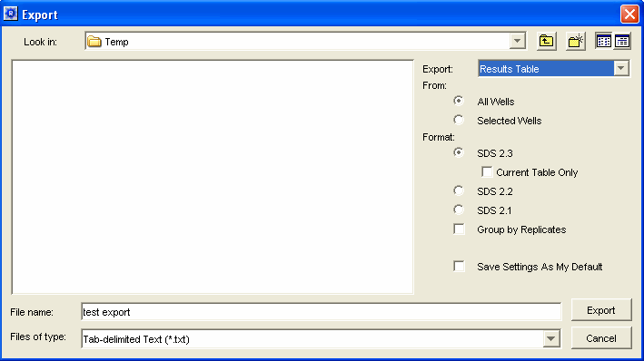

Importing data from the 7900 is unfortunately one of the most complex encounter to date. This is primarily due to the fact that the 7900 software exports data using a comma delimited file format, and that amplicon and sample information is exported as one file, whereas the Fc data sets are exported into a second. It is thus necessary to first convert the comma delimited files into an excel worksheet and then to combine the two datafiles into a single excel workbook.
Note that the amplicon name is taken from the "Detector", so during plate setup be sure that the amplicon is designated as the detector and that the sample is entered into the "Sample Name". For all calibration reactions, be sure to set the task to "Standard" and to set the quantity to the nanograms of lambda gDNA that was amplified (normally 100 fg).
Finally , be sure that ROX normalization has been turned off (i.e. that the "Passive Reference" located on the bottom of the setup page is set to "-None-") and that the data has been "Analyzed".
Go to "Export..." located on the File menu and select Results Table, or use the export button on the button bar. Provide a location and name and push export:

Use MS Excel to open the resulting text file, which will generate a panel asking about how to import the data. Simply push finish and save it as a .xls file using the “File-Save as...” in the File menu.
Go to B5 and enter the run data.
Fc data import
Insert a new work sheet, which is where the Fc datasets will be located. Note that this must be the first worksheet in the workbook.
Return the to 7900 Ver 2.3 program, go to the export panel and now selected the "Clipped" for export:
Again select a location and name, go to MS Excel and open this new file as was done for the Results Table. Select and copy (ctrl A, ctrl C) all of the data in this new worksheet.
Return to the first workbook and select A1 in the empty worksheet that was previously inserted, and paste the Fc data (ctrl V). Save the file, which is now ready to import.